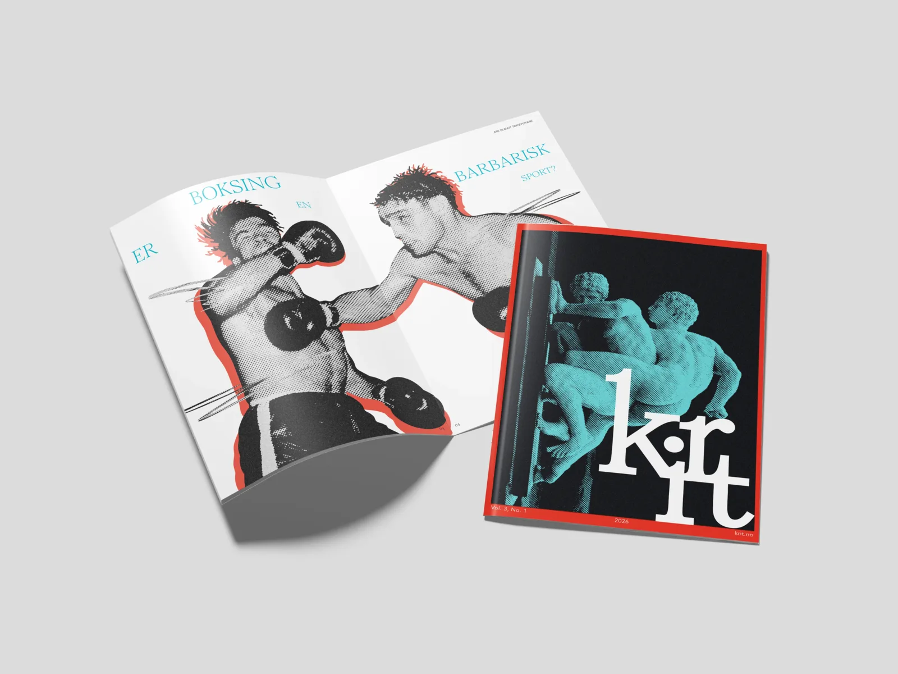
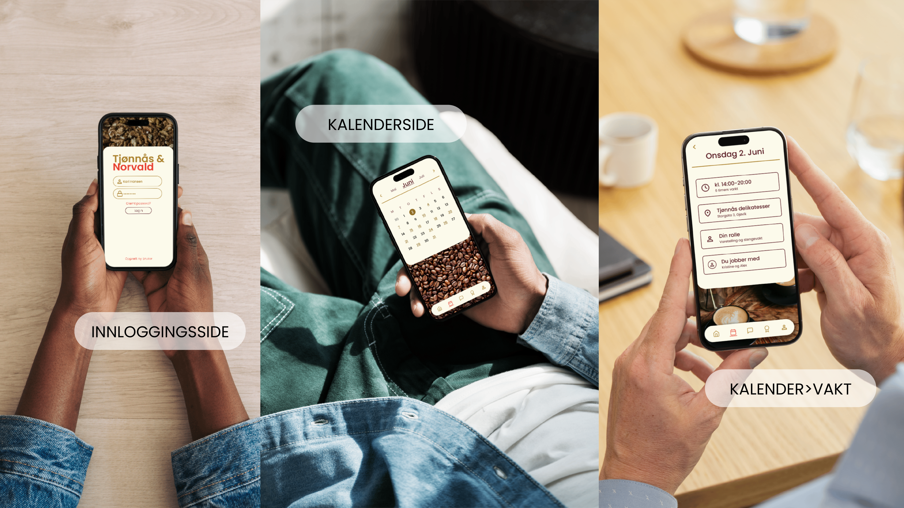

ARBEIDER

Emanuel Viegeland Museum
Mobil-first redesign av nettsiden til Emanuel Vigeland Museum i Oslo.

Reina Fruktgård
Emballasjedesign for en norsk småskalaprodusent med fokus på lokalitet og håndverk.

Stoppestedet
Merkevare og nettside for et fiktivt lavterskel makerspace i Oslo.

KRIT Litteraturtidsskrift
Redaksjonelt konsept for et litterært tidsskrift som utforsker forholdet mellom kropp, kultur og erfaring.

Tjønnås & Norvald
Ansattportal som samler vaktlister, kommunikasjon og opplæring på én flate.

Bokomslag
Ny visuell identitet for tre norske litterære klassikere med preget typografi og tekstilbind.

Stiftelsen WE
Helhetlig visuell identitet for en sosial stiftelse som styrker kvinner i arbeidslivet.

Flerkanalspublisering
Visuell kommunikasjonsløsning for SRH Berlin på tvers av plakat, sosiale medier og trykksaker.
Om meg

Grafisk designer som løser problemer gjennom visuell kommunikasjon.
Hei! Jeg er Josefine. Jeg har nylig fullført en bachelor i grafisk design ved NTNU, og er åpen for jobb. Som designer drives jeg av å løse problemer gjennom visuell kommunikasjon – enten det er å gjøre kompleks informasjon forståelig, eller å skape intuitive brukeropplevelser.
Jeg har jobbet mye med typografi og merkevarebygging, og gjennom tverrfaglige prosjekter har jeg fått en sterk interesse for UI/UX. Målet mitt er alltid å skape løsninger som ikke bare ser bra ut, men som faktisk fungerer.
Gleden over håndverket og designprosessen startet på kunstlinjen, mens et friår med språkreise til Korea ga meg spennende innsikt i hvordan design og kommunikasjon fungerer i andre kulturer.
Når jeg ikke sitter foran skjermen, lærer jeg gjerne et nytt språk. Jeg snakker nesten flytende koreansk, pusser på tysken, og lærer ukrainsk og russisk for gøy! For meg henger nysgjerrigheten for språk og design tett sammen – begge deler handler tross alt om å forstå mennesker og kommunisere på en måte som treffer.
Kontakt
For samarbeid, oppdrag eller bare en liten prat, send gjerne en e-post: